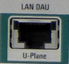

LAN DAU Connector (Optional)
 |
The LAN DAU connector is installed together with the data application unit (DAU, option R&S CMW-B450x).
It is an eight-pin RJ45 connector, used to connect the R&S CMW to a LAN for end-to-end IP data testing and U-Plane testing.
Up to option R&S CMW-B450D, the interface supports 100 Mbit/s and 1 Gbit/s.
With option R&S CMW-B450H, the interface supports 1 Gbit/s and 10 Gbit/s. The used mode is indicated by the right LED (green on = 1 Gbit/s, amber on = 10 Gbit/s). The left LED indicates the link activity (green blinking).
In 10 Gbit/s mode, the maximum allowed length of the LAN cable is 5 m. |